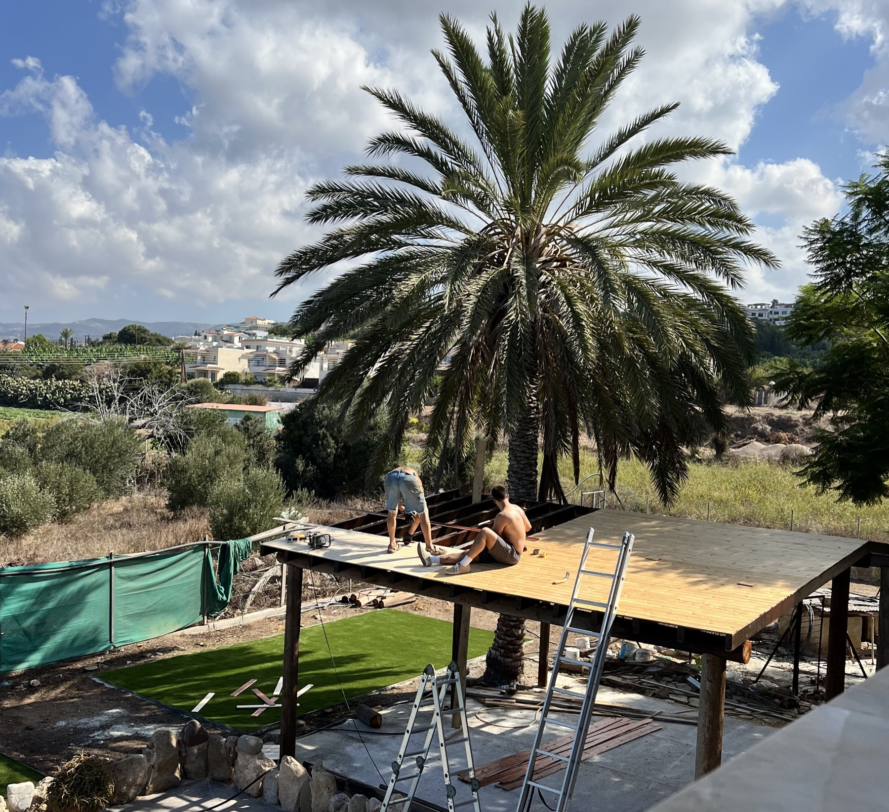

About Hierax Studio

The maker
I grew up in Cyprus, building things out of wood for as long as I can remember.
Cyprus is a small island with a long memory. Its villages have carved dowry chests and woven rush-seat chairs by hand for centuries, and the painted churches of the Troodos still shelter under their steep timber roofs. It is also the birthplace of Zeno of Kition, who went on to found Stoicism in Athens. I grew up with both: a respect for things made slowly by hand, and the Stoic idea that a good life is a simple one, lived in agreement with nature.
At home, we harvest our olive orchards every year and press our own oil. It taught me to respect olive wood and everything it can become.
Once a year we travelled to my grandparents' house in Pittsburgh. George Nakashima's furniture was scattered through the rooms, pieces my grandfather commissioned that turned the house into something truly its own. There was an Amish staircase I appreciated for the strength and quality of its build, and a doorway I still think about. Not far away, I had my first visit to Frank Lloyd Wright's Fallingwater, and understood how a home can bring you closer to nature without ever leaving it.
Philosophy
Years later at UCL, I stood before Jeremy Bentham himself, preserved in his glass case a short walk from the Bartlett, where I was surrounded by some of the brightest minds designing the built environment. Bentham argued that every choice should be judged by how much good it does. I have tried to design that way ever since.
Use comes first.
Every piece starts with one question: how will it be used, every day, for decades? Nothing is added that does not earn its place.
Beauty is what makes things last.
The most sustainable furniture is the piece nobody wants to throw away. People take care of what they love, so beauty is not decoration. It is how a piece survives.
The tree's second life.
Wood is one of the most regenerative materials we have. It grows back, it holds carbon, and when it is joined well it lasts for centuries. I choose each board for its grain and its history, and join it wood to wood wherever I can.
Built to outlive us.
Every piece is made to be repaired, never replaced, and handed down.
Woodworking has always been a spiritual pursuit for me. Hierax Studio is how I share that feeling with you.
Emilios